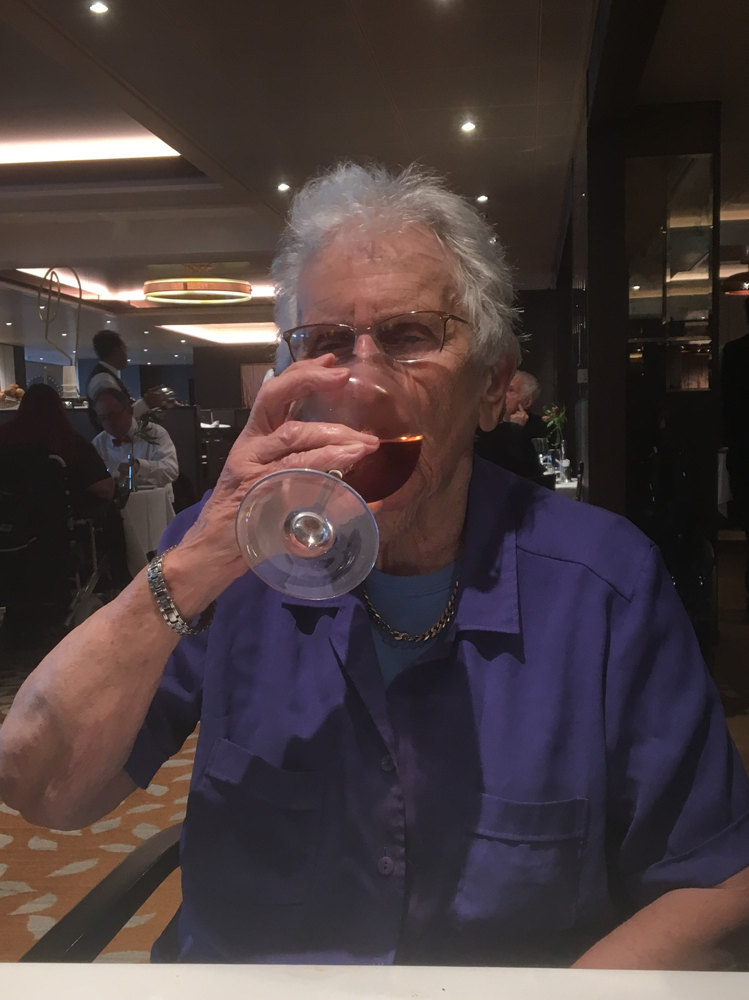

Britannia Cruise 2017
Monday Sept 4th 2017
Mum and I drove down to the Ocean Terminal, Southampton from Barry, arriving at about 12.30pm. We got
Mum a wheelchair ride onto the ship, which took us to the Peninsular Restaurant as none of the cabins / suites were ready. We had a
 free buffet lunch and a
couple of glasses of cava, before going to the Kashmir Suite B623. It was a different design from the one on Aurora, and a bit
smaller in size, but with a much more modern TV entertainment system.
free buffet lunch and a
couple of glasses of cava, before going to the Kashmir Suite B623. It was a different design from the one on Aurora, and a bit
smaller in size, but with a much more modern TV entertainment system.
We set sail at 4.30pm. There was the usual practice muster with the life jackets, in the bar area for the Sindhu restaurant. We had
been assigned the Peninsular Restaurant as the default for our Freedom dining, where the staff were late opening up, as they had
been mustering too. After a 5-10 minute wait, we were assigned a two person table which we managed to keep each subsequent evening.
We used one bottle from our 12 Captain's Collection with dinner, and drank the free bottle of champagne back in the suite. Mum
struggled with the Freedom Dining rather than set sitting concept. As people wandered in as they liked, she kept saying "They're
late coming in". We met our Steward Ted, who delivered the chocolates and the newsletter, and our Butler Roni delivered our
canapes, and the menu for the next day.
Tuesday September 5th 2017
A day at sea heading down into the Bay of Biscay and the sea was lumpy. Roni, the Butler had told
us the night before, that as suite occupants, we could have an exclusive, sit down breakfast in the Epicurean restaurant. There
were a couple of issues with this:-
a) We were in the stern section of the ship, and the Epicurean was in the aft section, so quite a long walk, and
b) It shut at 9.00am. Who gets up for breakfast that early on holiday? We declined our invitation. The self service Horizon restaurant
was fine for what we wanted, and you could have breakfast there up to noon, not that we were ever that late. Mum had a bowl of
Alpen, a bowl of fruit, a croissant and a yoghurt. I had cooked breakfast - bacon, sausage, fried egg, scrambled egg, mushrooms and toast,
plus croissant and yoghurt.
The 12 noon report from the Officer of the Watch, confirmed the wind was blowing Force 8, and sea conditions were rough. Luckily Mum and I
are good sailors, and I like it that lumpy. The pressure differential made opening the balcony doors very difficult. When we did open
the door, the wind was shrieking around the toilet door jamb, making a dreadful noise. Eric Lanlard, Master Patissier was on board.
For £75 you could have a hands on class with him at the Cookery Club. Alternatively, there was a adult shuffleboard explanation and
competition, a line dancing class, or a corsage & buttonhole class, in readiness for the black tie dinner.

On our way down to the first of our Black Tie dinners, due to the rough sea state, the stairwells had "motion discomfort bags" available.
That's sick bags to you and me. I watched the ladies entering the restaurant in their Black Tie dress, and, as I love to people watch,
I judged the ladies attire, and put them into 1 of 4 categories:-
- Gosh that outfit must have cost an absolute fortune
- Oh, that outfit suits her and it didn't cost an arm and a leg
- That looks like a good outfit but not on you madam and
- What were you thinking woman?
Our Marco Pierre White insprired menu was:-
- Starters - Smoked Duck Breast with a Crushed Hazelnut and Herb Crouton or Fried Goat's Cheese Crottin
Soup - Ham and Puy Lentil
Sorbet - Passion Fruit
Mains - Grilled Halibut Glazed with a Crab Sabayon or Hot Oak-Smoked Salmon or Ballotine of Corn-fed Chicken with a Quail, Pistachio
and Truffle Mousseline or Grilled Milk-fed Calves Liver, Veal Kidney and Chorizo Sausage Brochette or Twice Baked Garlic &
Onion Souffle
Desserts - Apple Tart Tatin or Chocolate and Grand Marnier Tart or White and Dark Chocolate Mousse Cake or Tropical Dream Sundae
Cheeseboard - Described as A selection of Regional British & Continental Cheese with Biscuits, it was really naff.